Multimodal_Distance
▼Varying_only_Mode_distance (Mixture, mu, 3 runs)
Pooled Chains results
Wasserstein Distance
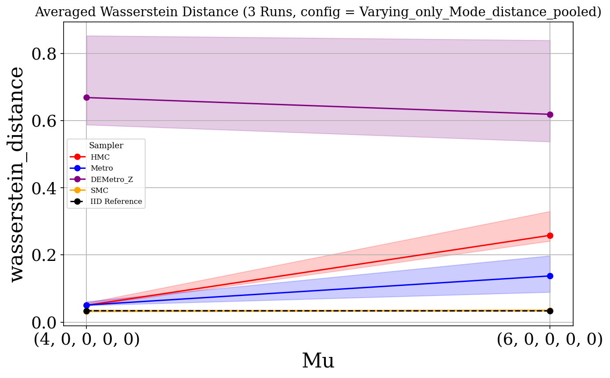
Sampler vs IID stats
| Sampler | Varying | t-stat | p-value | Glass Δ |
|---|---|---|---|---|
| DEMetro_Z | (4, 0, 0, 0, 0) | 4.472 | 0.0465 | 182.189 |
| DEMetro_Z | (6, 0, 0, 0, 0) | 3.758 | 0.0641 | 417.545 |
| Metro | (4, 0, 0, 0, 0) | 2.786 | 0.0896 | 5.491 |
| Metro | (6, 0, 0, 0, 0) | 1.781 | 0.217 | 68.843 |
| HMC | (4, 0, 0, 0, 0) | 2.942 | 0.0714 | 4.591 |
| HMC | (6, 0, 0, 0, 0) | 4.807 | 0.0406 | 160.826 |
| SMC | (4, 0, 0, 0, 0) | -0.833 | 0.454 | -0.774 |
| SMC | (6, 0, 0, 0, 0) | 0.282 | 0.8 | 0.503 |
Sampler vs Sampler stats
| Sampler Pair | Varying | t-stat | p-value | Cohen’s d |
|---|---|---|---|---|
| Metro_vs_SMC | 0 | 4.793 | 0.0409 | 2.767 |
| Metro_vs_SMC | 1 | 1.722 | 0.227 | 0.994 |
| DEMetro_Z_vs_SMC | 0 | 4.509 | 0.0458 | 2.603 |
| DEMetro_Z_vs_SMC | 1 | 3.792 | 0.0631 | 2.189 |
| HMC_vs_DEMetro_Z | 0 | -4.231 | 0.0516 | -2.443 |
| HMC_vs_DEMetro_Z | 1 | -3.124 | 0.089 | -1.804 |
| HMC_vs_SMC | 0 | 2.652 | 0.118 | 1.531 |
| HMC_vs_SMC | 1 | 5.026 | 0.0374 | 2.902 |
| HMC_vs_Metro | 0 | -0.342 | 0.765 | -0.197 |
| HMC_vs_Metro | 1 | 1.615 | 0.248 | 0.933 |
| Metro_vs_DEMetro_Z | 0 | -4.274 | 0.0506 | -2.468 |
| Metro_vs_DEMetro_Z | 1 | -3.164 | 0.087 | -1.827 |
Wasserstein Distance (scatter)
Glass’s Δ WS
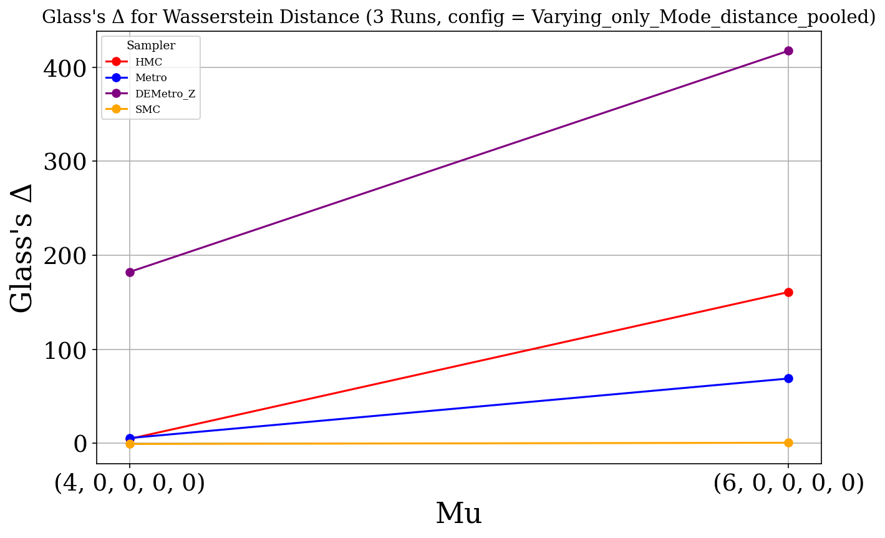
Glass’s Δ table
| Sampler | Varying | MCMC Mean | IID Mean | IID Std | Glass’s Δ |
|---|---|---|---|---|---|
| DEMetro_Z | (4, 0, 0, 0, 0) | 0.737 | 0.036 | 0.004 | 182.189 |
| DEMetro_Z | (6, 0, 0, 0, 0) | 0.711 | 0.034 | 0.002 | 417.545 |
| Metro | (4, 0, 0, 0, 0) | 0.057 | 0.036 | 0.004 | 5.491 |
| Metro | (6, 0, 0, 0, 0) | 0.146 | 0.034 | 0.002 | 68.843 |
| HMC | (4, 0, 0, 0, 0) | 0.053 | 0.036 | 0.004 | 4.591 |
| HMC | (6, 0, 0, 0, 0) | 0.295 | 0.034 | 0.002 | 160.826 |
| SMC | (4, 0, 0, 0, 0) | 0.033 | 0.036 | 0.004 | -0.774 |
| SMC | (6, 0, 0, 0, 0) | 0.035 | 0.034 | 0.002 | 0.503 |
Mmd Rff
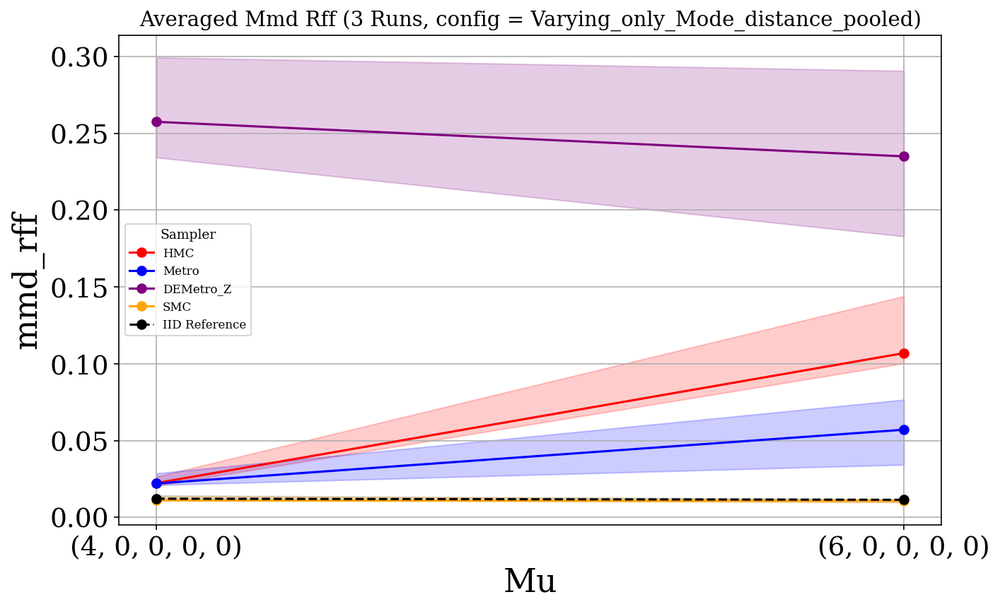
Sampler vs IID stats
| Sampler | Varying | t-stat | p-value | Glass Δ |
|---|---|---|---|---|
| DEMetro_Z | (4, 0, 0, 0, 0) | 6.723 | 0.0213 | 101.818 |
| DEMetro_Z | (6, 0, 0, 0, 0) | 3.643 | 0.0677 | 126.302 |
| Metro | (4, 0, 0, 0, 0) | 2.452 | 0.114 | 4.873 |
| Metro | (6, 0, 0, 0, 0) | 1.802 | 0.213 | 24.593 |
| HMC | (4, 0, 0, 0, 0) | 2.801 | 0.077 | 4.173 |
| HMC | (6, 0, 0, 0, 0) | 4.276 | 0.0503 | 64.895 |
| SMC | (4, 0, 0, 0, 0) | -0.265 | 0.805 | -0.259 |
| SMC | (6, 0, 0, 0, 0) | -0.074 | 0.944 | -0.065 |
Sampler vs Sampler stats
| Sampler Pair | Varying | t-stat | p-value | Cohen’s d |
|---|---|---|---|---|
| Metro_vs_SMC | 0 | 4.601 | 0.0441 | 2.656 |
| Metro_vs_SMC | 1 | 1.764 | 0.22 | 1.018 |
| DEMetro_Z_vs_SMC | 0 | 6.493 | 0.0229 | 3.749 |
| DEMetro_Z_vs_SMC | 1 | 3.678 | 0.0666 | 2.123 |
| HMC_vs_DEMetro_Z | 0 | -6.191 | 0.0251 | -3.574 |
| HMC_vs_DEMetro_Z | 1 | -2.524 | 0.128 | -1.457 |
| HMC_vs_Metro | 0 | -0.258 | 0.821 | -0.149 |
| HMC_vs_Metro | 1 | 1.887 | 0.2 | 1.090 |
| Metro_vs_DEMetro_Z | 0 | -5.875 | 0.0278 | -3.392 |
| Metro_vs_DEMetro_Z | 1 | -3.400 | 0.0767 | -1.963 |
| HMC_vs_SMC | 0 | 2.493 | 0.13 | 1.439 |
| HMC_vs_SMC | 1 | 4.458 | 0.0468 | 2.574 |
Mmd Rff (scatter)
Glass’s Δ MMD-RFF
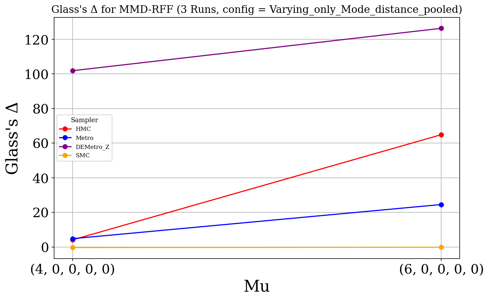
Glass’s Δ table
| Sampler | Varying | MCMC Mean | IID Mean | IID Std | Glass’s Δ |
|---|---|---|---|---|---|
| DEMetro_Z | (4, 0, 0, 0, 0) | 0.270 | 0.014 | 0.003 | 101.818 |
| DEMetro_Z | (6, 0, 0, 0, 0) | 0.237 | 0.011 | 0.002 | 126.302 |
| Metro | (4, 0, 0, 0, 0) | 0.026 | 0.014 | 0.003 | 4.873 |
| Metro | (6, 0, 0, 0, 0) | 0.055 | 0.011 | 0.002 | 24.593 |
| HMC | (4, 0, 0, 0, 0) | 0.024 | 0.014 | 0.003 | 4.173 |
| HMC | (6, 0, 0, 0, 0) | 0.127 | 0.011 | 0.002 | 64.895 |
| SMC | (4, 0, 0, 0, 0) | 0.013 | 0.014 | 0.003 | -0.259 |
| SMC | (6, 0, 0, 0, 0) | 0.011 | 0.011 | 0.002 | -0.065 |
Runtime
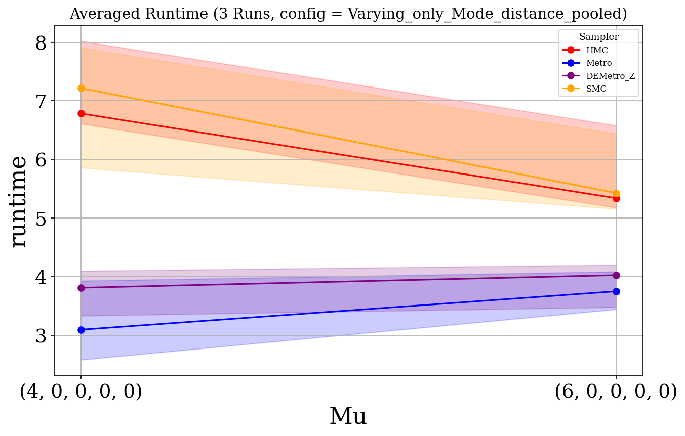
Runtime (scatter)
Ess
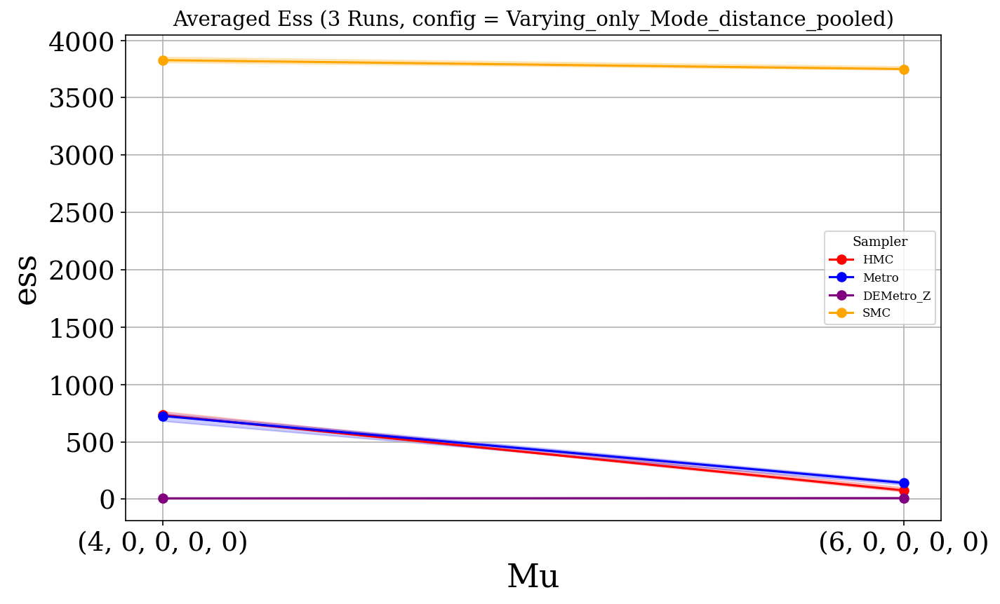
Ess (scatter)
Ess Per Sec
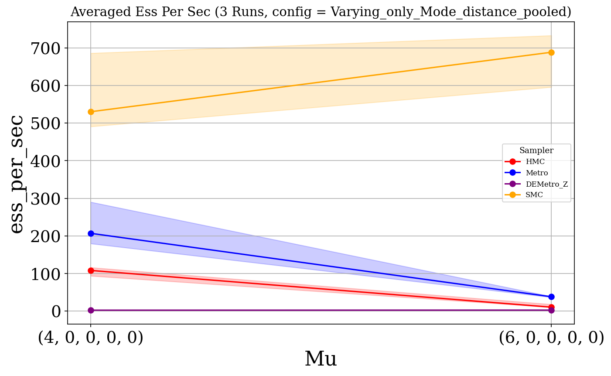
Ess Per Sec (scatter)
R Hat
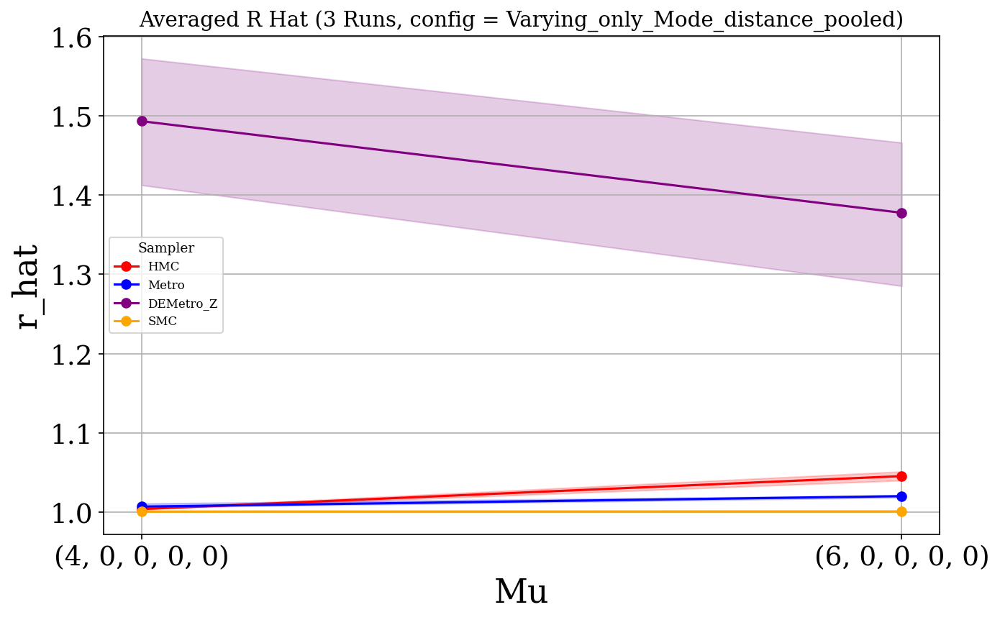
R Hat (scatter)
One Chain results
Wasserstein Distance
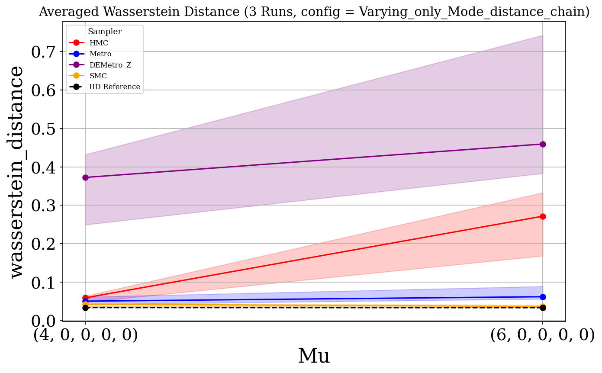
Sampler vs IID stats
| Sampler | Varying | t-stat | p-value | Glass Δ |
|---|---|---|---|---|
| DEMetro_Z | (4, 0, 0, 0, 0) | 2.735 | 0.112 | 76.493 |
| DEMetro_Z | (6, 0, 0, 0, 0) | 2.575 | 0.123 | 347.591 |
| Metro | (4, 0, 0, 0, 0) | 1.435 | 0.279 | 4.257 |
| Metro | (6, 0, 0, 0, 0) | 2.078 | 0.173 | 25.936 |
| HMC | (4, 0, 0, 0, 0) | 1.926 | 0.182 | 4.917 |
| HMC | (6, 0, 0, 0, 0) | 2.181 | 0.161 | 129.373 |
| SMC | (4, 0, 0, 0, 0) | 1.096 | 0.355 | 1.409 |
| SMC | (6, 0, 0, 0, 0) | 0.939 | 0.437 | 2.280 |
Sampler vs Sampler stats
| Sampler Pair | Varying | t-stat | p-value | Cohen’s d |
|---|---|---|---|---|
| Metro_vs_SMC | 0 | 1.579 | 0.255 | 0.912 |
| Metro_vs_SMC | 1 | 1.669 | 0.237 | 0.964 |
| DEMetro_Z_vs_SMC | 0 | 2.800 | 0.107 | 1.617 |
| DEMetro_Z_vs_SMC | 1 | 2.543 | 0.126 | 1.468 |
| HMC_vs_DEMetro_Z | 0 | -2.367 | 0.142 | -1.366 |
| HMC_vs_DEMetro_Z | 1 | -1.127 | 0.377 | -0.651 |
| HMC_vs_SMC | 0 | 0.978 | 0.431 | 0.565 |
| HMC_vs_SMC | 1 | 2.184 | 0.161 | 1.261 |
| HMC_vs_Metro | 0 | 0.123 | 0.914 | 0.071 |
| HMC_vs_Metro | 1 | 1.824 | 0.21 | 1.053 |
| Metro_vs_DEMetro_Z | 0 | -2.869 | 0.103 | -1.656 |
| Metro_vs_DEMetro_Z | 1 | -2.277 | 0.151 | -1.315 |
Wasserstein Distance (scatter)
Glass’s Δ WS
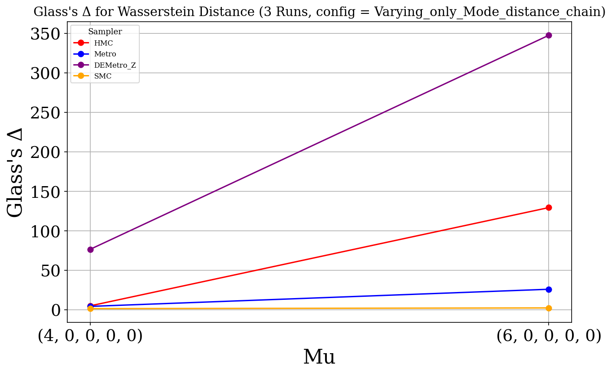
Glass’s Δ table
| Sampler | Varying | MCMC Mean | IID Mean | IID Std | Glass’s Δ |
|---|---|---|---|---|---|
| DEMetro_Z | (4, 0, 0, 0, 0) | 0.330 | 0.036 | 0.004 | 76.493 |
| DEMetro_Z | (6, 0, 0, 0, 0) | 0.598 | 0.034 | 0.002 | 347.591 |
| Metro | (4, 0, 0, 0, 0) | 0.052 | 0.036 | 0.004 | 4.257 |
| Metro | (6, 0, 0, 0, 0) | 0.076 | 0.034 | 0.002 | 25.936 |
| HMC | (4, 0, 0, 0, 0) | 0.055 | 0.036 | 0.004 | 4.917 |
| HMC | (6, 0, 0, 0, 0) | 0.244 | 0.034 | 0.002 | 129.373 |
| SMC | (4, 0, 0, 0, 0) | 0.041 | 0.036 | 0.004 | 1.409 |
| SMC | (6, 0, 0, 0, 0) | 0.038 | 0.034 | 0.002 | 2.280 |
Mmd Rff
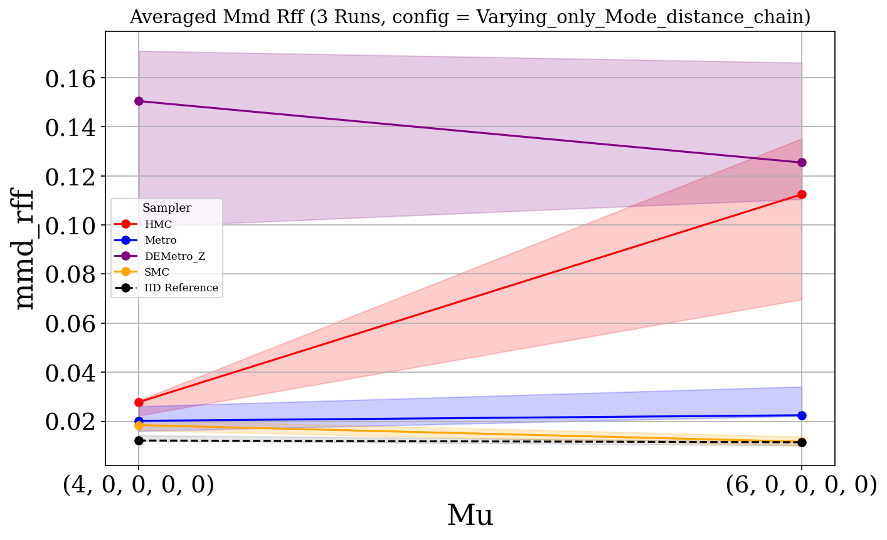
Sampler vs IID stats
| Sampler | Varying | t-stat | p-value | Glass Δ |
|---|---|---|---|---|
| DEMetro_Z | (4, 0, 0, 0, 0) | 2.729 | 0.112 | 46.234 |
| DEMetro_Z | (6, 0, 0, 0, 0) | 3.966 | 0.0579 | 73.494 |
| Metro | (4, 0, 0, 0, 0) | 1.294 | 0.313 | 3.092 |
| Metro | (6, 0, 0, 0, 0) | 2.423 | 0.132 | 10.735 |
| HMC | (4, 0, 0, 0, 0) | 2.669 | 0.0902 | 4.410 |
| HMC | (6, 0, 0, 0, 0) | 2.296 | 0.148 | 49.206 |
| SMC | (4, 0, 0, 0, 0) | 1.727 | 0.175 | 1.934 |
| SMC | (6, 0, 0, 0, 0) | 0.518 | 0.641 | 0.681 |
Sampler vs Sampler stats
| Sampler Pair | Varying | t-stat | p-value | Cohen’s d |
|---|---|---|---|---|
| Metro_vs_SMC | 0 | 0.846 | 0.487 | 0.488 |
| Metro_vs_SMC | 1 | 1.854 | 0.205 | 1.070 |
| DEMetro_Z_vs_SMC | 0 | 2.768 | 0.109 | 1.598 |
| DEMetro_Z_vs_SMC | 1 | 3.972 | 0.0579 | 2.293 |
| HMC_vs_DEMetro_Z | 0 | -2.301 | 0.148 | -1.328 |
| HMC_vs_DEMetro_Z | 1 | -0.637 | 0.589 | -0.368 |
| HMC_vs_Metro | 0 | 0.345 | 0.763 | 0.199 |
| HMC_vs_Metro | 1 | 1.814 | 0.211 | 1.047 |
| Metro_vs_DEMetro_Z | 0 | -2.921 | 0.0999 | -1.687 |
| Metro_vs_DEMetro_Z | 1 | -2.880 | 0.102 | -1.663 |
| HMC_vs_SMC | 0 | 1.010 | 0.419 | 0.583 |
| HMC_vs_SMC | 1 | 2.313 | 0.147 | 1.336 |
Mmd Rff (scatter)
Glass’s Δ MMD-RFF
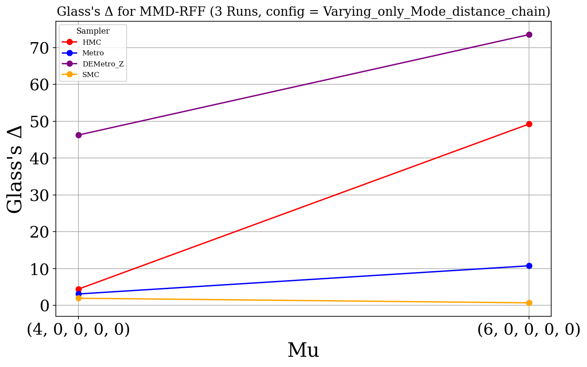
Glass’s Δ table
| Sampler | Varying | MCMC Mean | IID Mean | IID Std | Glass’s Δ |
|---|---|---|---|---|---|
| DEMetro_Z | (4, 0, 0, 0, 0) | 0.130 | 0.014 | 0.003 | 46.234 |
| DEMetro_Z | (6, 0, 0, 0, 0) | 0.143 | 0.011 | 0.002 | 73.494 |
| Metro | (4, 0, 0, 0, 0) | 0.021 | 0.014 | 0.003 | 3.092 |
| Metro | (6, 0, 0, 0, 0) | 0.030 | 0.011 | 0.002 | 10.735 |
| HMC | (4, 0, 0, 0, 0) | 0.025 | 0.014 | 0.003 | 4.410 |
| HMC | (6, 0, 0, 0, 0) | 0.099 | 0.011 | 0.002 | 49.206 |
| SMC | (4, 0, 0, 0, 0) | 0.018 | 0.014 | 0.003 | 1.934 |
| SMC | (6, 0, 0, 0, 0) | 0.012 | 0.011 | 0.002 | 0.681 |
Runtime
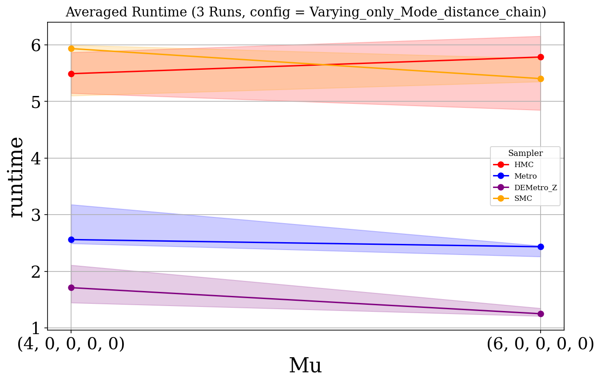
Runtime (scatter)
Ess
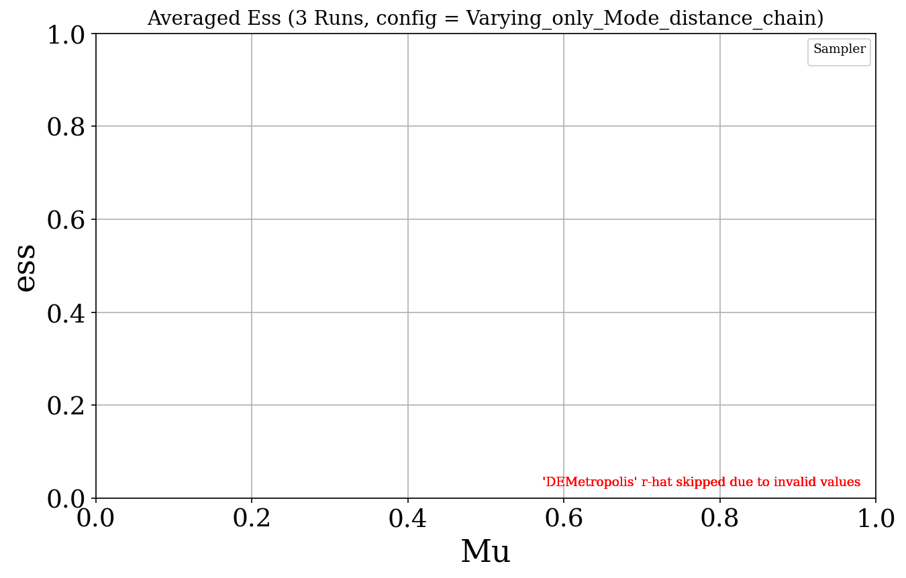
Ess Per Sec
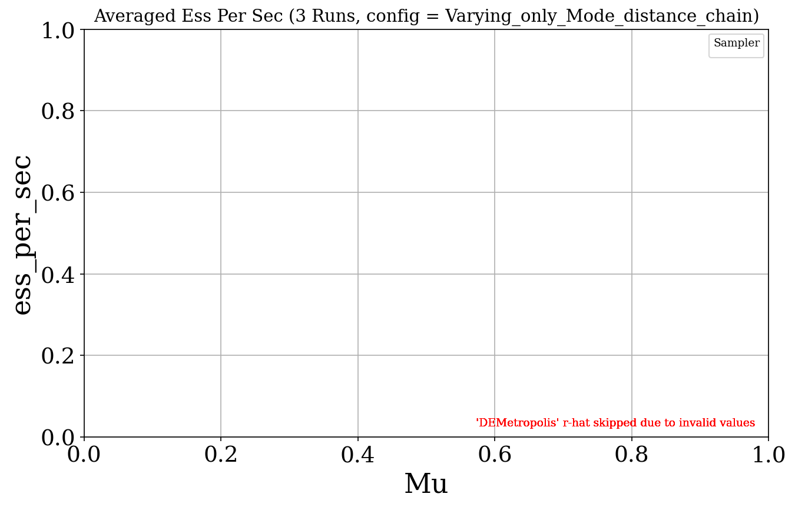
R Hat
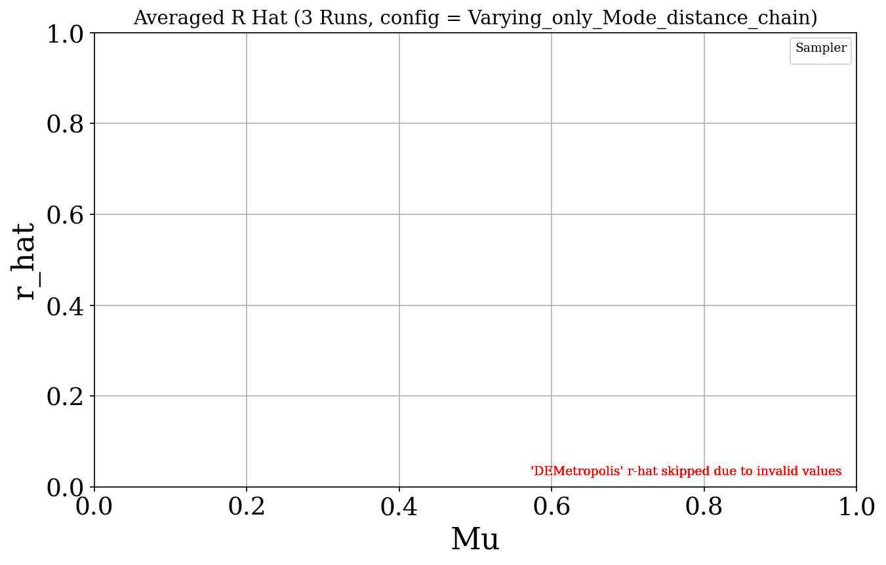
Trace Plots
Pooled
(4, 0, 0, 0, 0)
_trace_plot.png)
_trace_plot.png)
_trace_plot.png)
_trace_plot.png)
(6, 0, 0, 0, 0)
_trace_plot.png)
_trace_plot.png)
_trace_plot.png)
_trace_plot.png)
Chain
(4, 0, 0, 0, 0)
_trace_plot.png)
_trace_plot.png)
_trace_plot.png)
_trace_plot.png)
(6, 0, 0, 0, 0)
_trace_plot.png)
_trace_plot.png)
_trace_plot.png)
_trace_plot.png)
Pairwise Scatter Plots
Pooled
(4, 0, 0, 0, 0)
(6, 0, 0, 0, 0)
Chain
(4, 0, 0, 0, 0)
(6, 0, 0, 0, 0)